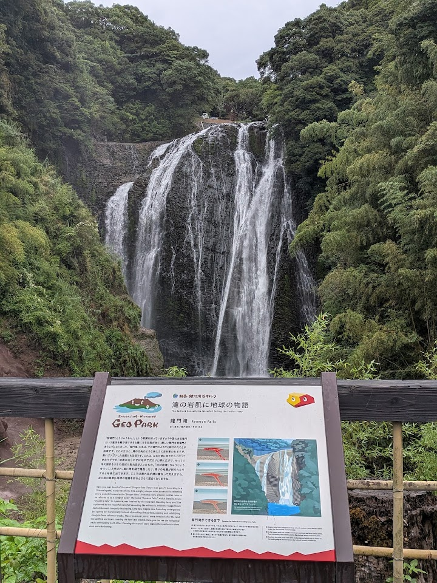
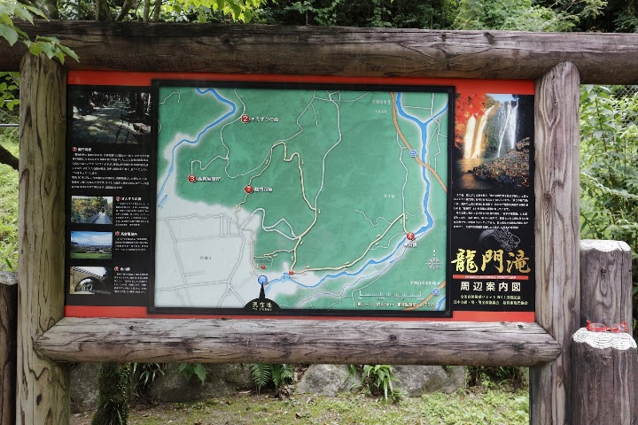
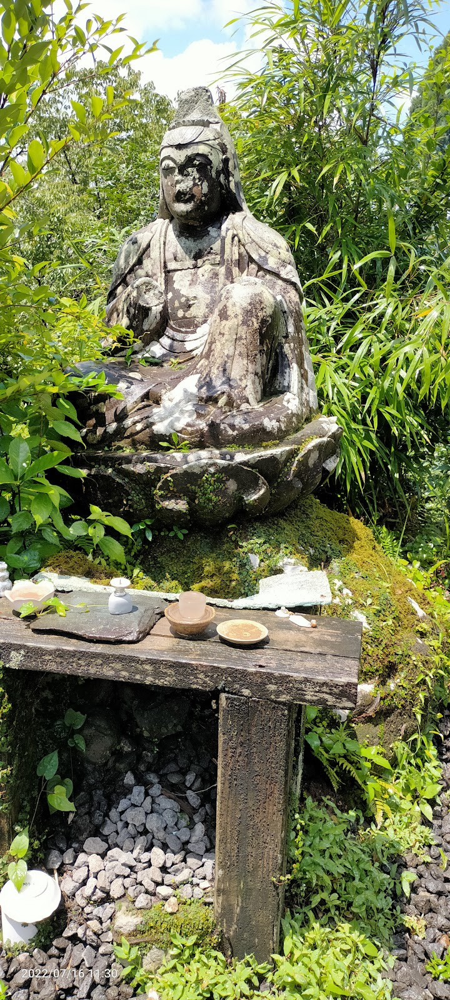
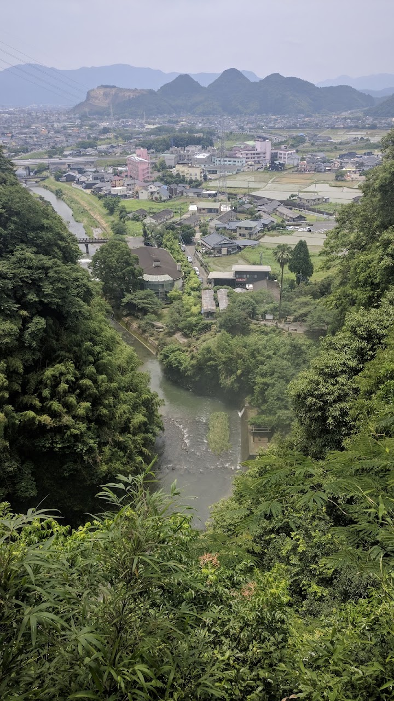
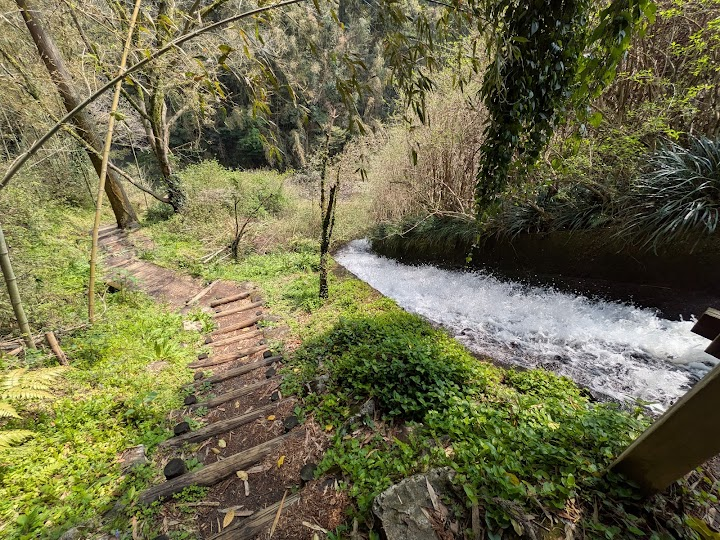

Ryumon Falls
Ryumon Falls is a high, wide waterfall in a green valley with walking paths to different viewing points. A visitor warns that the observation deck does not give a view of the falls, so use the path down to the water instead.
Open in Google Maps (street view, more photos and reviews there)






Visitor tips on finding it and getting there
We took a taxi from Kajiki Station for just 1000 yen. We walked back, and it took about 25 to 30 minutes. The falls are beautiful and there is a beautiful,but slippery, moss covered stone path nearby.
Took some time to find the entrance to get to the falls, once found it was amazing. It seems like the site is not maintained as things look very old and path was wet and full of leaf and mud. That however doesn't take away the beauty of the falls. Enjoy 👍🏽
A breathtaking experience. The waterfalls can be seen in the viewpoint, which is located about 300m from the beginning, i.e. the lower point of the Ryumonjizaka Trail. Google shows the way up the road, but there is a comfortable path to the waterfall with a beautiful view. But everything is marked only in Japanese.